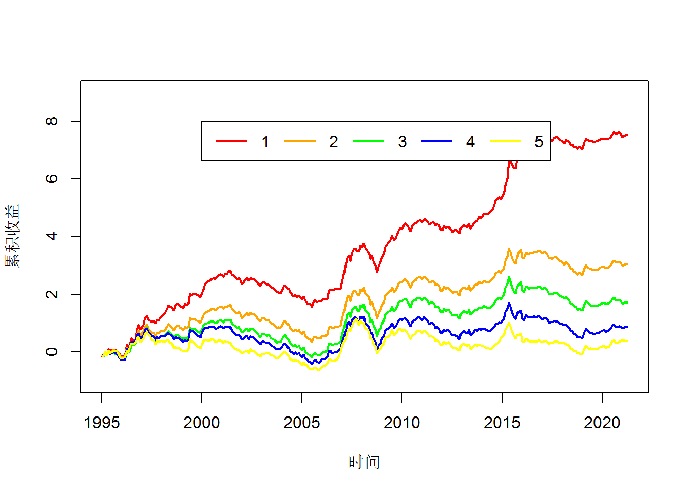

解析中国A股市场的定价异象
薛英杰 / 2021-04-26
自Sharp and Lintner(1965)提出资本资产定价模型以来，学者们发现了许多长期存在投资异象策略，即通过这些策略可以获得超过资本资产定价模型预测的正常回报，并将定价模型不能解释的策略成为“投资异象”。目前，在学术界具有深远影响力的资产定价异象主要包括20世纪70年代以来逐步显现的beta异象,20世纪90年代逐步确认的动量异象、价值异象（Basu,1977）,21世纪初发现的流动性异象、特质波动率异象、盈利异象、投资异象。这些异象在中国A股市场是否存在？让我们一探究竟。
市值异象
Banz and Reinganum(1981)第一次记录了市值异象，发现小盘股收益高于大盘股收益，Fama and French(1992)将市值异象作为定价因子纳入定价模型。我们先评价市值异象在中国市场的表现，然后参考Fama and French(1992)的方法构造市值因子。
1、市值与价值策略表现
在t月将股票按t-1月的市值分为5组，分别统计当月等权收益和总市值加权收益，具体代码如下：
##加载软件包
pacman::p_load(data.table,plyr,stringr,dplyr,mongolite,future.apply,future,data.table,gt)
##建立R与MongoDB数据库的链接，collection为数据表对应的文件，db为数据库中的表
md<-mongo(collection = "tradedatadaily",db="stockdata")
mm<-mongo(collection = "monthlytrade",db="stockdata")
##查询字段有上市公司代码（symbol）、收盘价(close)、前收盘价(pre_close)，总市值(total_mv)，市净率（pb）
dailydata<-as.data.table(md$find(query = '{}',
fields = '{"symbol":"ture","trade_date":"ture","total_mv":"ture","pe":"ture","_id":"false"}'))[order(symbol,trade_date)][,yms:=gsub('^(\\d{4})(\\d{2})(\\d{2})$', '\\1-\\2',trade_date)][,.SD[.N],by=.(symbol,yms)][,-c(3,4)]
monthdata<-as.data.table(mm$find(query = '{}',
fields = '{"symbol":"ture","trade_date":"ture","close":"ture","pre_close":"ture","_id":"false"}'))[,yms:=gsub('^(\\d{4})(\\d{2})(\\d{2})$', '\\1-\\2',trade_date)][,-c(1,3)][dailydata,on=.(symbol,yms)][,':='(lmv=lag(total_mv),lbm=lag(1/pe),rets=close/pre_close-1),by=.(symbol)][!is.na(lbm)&!is.na(close)&yms>="1995-01",][,.(symbol,yms,lmv,lbm,rets)]
portfoli<-monthdata[,':='(gmv=cut(lmv,c(min(lmv)-10,quantile(lmv,seq(0.2,0.8,0.2)),max(lmv)+10),labels=1:5),
gbm=cut(lbm,c(min(lbm)-10,quantile(lbm,seq(0.2,0.8,0.2)),max(lbm)+10),labels=1:5))
,by=yms][,':='(mveqrets=mean(rets),mvwret=sum(rets*lmv)/sum(lmv)),by=.(yms,gmv)
][,':='(bmeqrets=mean(rets),bmwret=sum(rets*lmv)/sum(lmv)),by=.(yms,gbm)]
##序列均值t检验
ttest<-function(x){
tt<-t.test(x)
return(c(round(tt$estimate,4),paste0("(",format(tt$statistic,digits=2,nsmall=2),")")))
}
mvp<-rbind(dcast(unique(portfoli[,.(yms,gmv,mveqrets)]),yms~gmv,value.var = c("mveqrets"))[,-c(1)][,lapply(.SD, ttest)],dcast(unique(portfoli[,.(yms,gmv,mvwret)]),yms~gmv,value.var = c("mvwret"))[,-c(1)][,lapply(.SD, ttest)])%>%gt()%>%tab_header(
title = "市值分组股票收益",
subtitle = "1995-01-01 to 2021-04-01"
)%>%
tab_row_group(
group = "等权收益",
rows = 1:2
)%>%tab_row_group(
group = "加权收益",
rows = 3:4
)
mvp| 市值分组股票收益 | ||||
|---|---|---|---|---|
| 1995-01-01 to 2021-04-01 | ||||
| 1 | 2 | 3 | 4 | 5 |
| 加权收益 | ||||
| 0.0216 | 0.0095 | 0.0053 | 0.0026 | 0.0015 |
| (3.54) | (1.69) | (0.96) | (0.49) | (0.34) |
| 等权收益 | ||||
| 0.0239 | 0.0097 | 0.0054 | 0.0027 | 0.0012 |
| (3.87) | (1.71) | (0.99) | (0.52) | (0.26) |
cumret<-dcast(unique(portfoli[,.(yms,gmv,mveqrets,mvwret)]),yms~gmv,value.var = c("mveqrets","mvwret"))[,c("mveqrets_1","mveqrets_2", "mveqrets_3","mveqrets_4","mveqrets_5","mvwret_1","mvwret_2","mvwret_3","mvwret_4", "mvwret_5"):=lapply(.SD, cumsum),.SDcols=c("mveqrets_1","mveqrets_2", "mveqrets_3","mveqrets_4","mveqrets_5","mvwret_1","mvwret_2","mvwret_3","mvwret_4", "mvwret_5")]
plot(as.Date(paste0(cumret$yms,"-01")),cumret$mveqrets_1,type="l",ylim = c(-1,9),ylab = "累积收益",xlab = "时间",lwd=2,col="red")
lines(as.Date(paste0(cumret$yms,"-01")),cumret$mveqrets_2,lwd=2,col="orange")
lines(as.Date(paste0(cumret$yms,"-01")),cumret$mveqrets_3,lwd=2,col="green")
lines(as.Date(paste0(cumret$yms,"-01")),cumret$mveqrets_4,lwd=2,col="blue")
lines(as.Date(paste0(cumret$yms,"-01")),cumret$mveqrets_5,lwd=2,col="yellow")
legend(as.Date(paste0("2000-01","-01")),8,c("1","2","3","4","5"),col = c("red","orange","green","blue","yellow"),lty = 1,lwd=2,horiz = T)
portfoli<-monthdata[order(yms,lmv)][,lapply(.SD, head,5),by=yms][,':='(mveqrets=mean(rets),mvwret=sum(rets*lmv)/sum(lmv)),by=.(yms)
][,':='(bmeqrets=mean(rets),bmwret=sum(rets*lmv)/sum(lmv)),by=.(yms)][yms>="2018-01",]